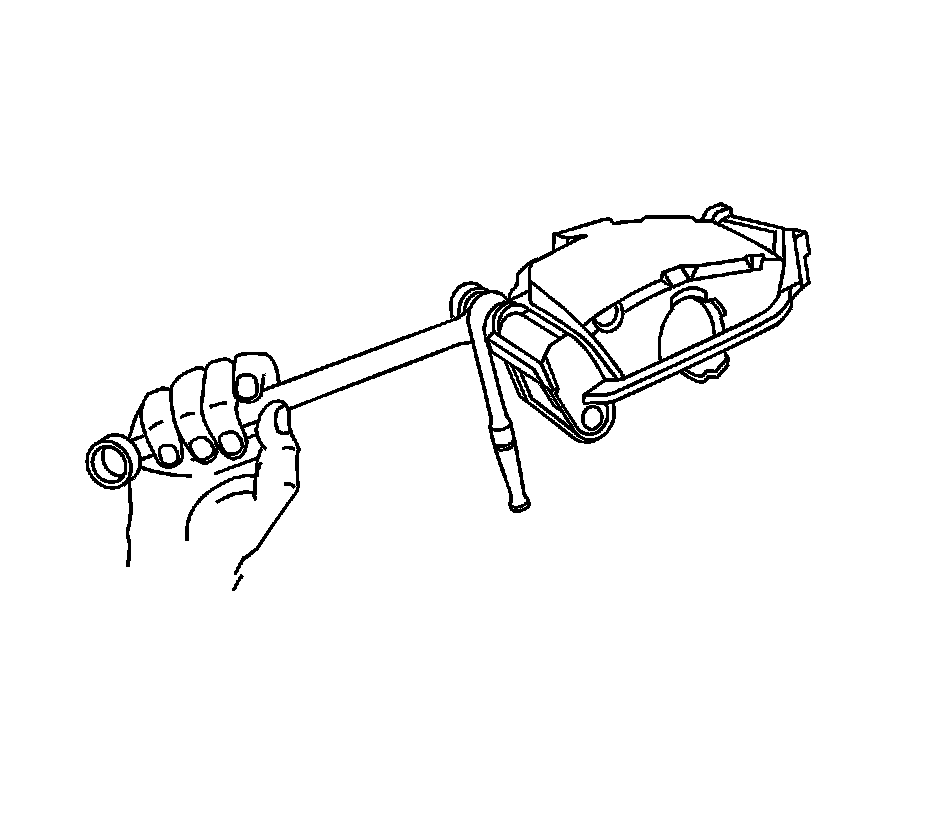
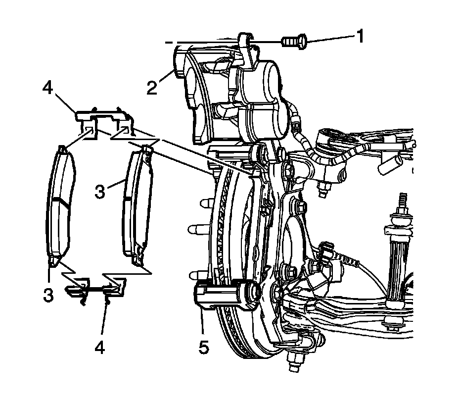

Front Disc Brake Pads Replacement (1500 Series)
Front Disc Brake Pads Replacement (1500 Series)
Caution: Refer to Brake Dust Caution.
Removal Procedure
1. Inspect the fluid level in the brake master cylinder reservoir.
2. If the fluid level is midway between the maximum-full point and the minimum allowable level, no fluid needs to be removed from the reservoir before proceeding.
3. If the fluid level is higher than midway between the maximum-full point and the minimum allowable level, remove fluid to the midway point before proceeding.
4. Raise and support the vehicle. Refer to Lifting and Jacking the Vehicle.
5. Remove the tire and wheel assembly. Refer to Tire and Wheel Removal and Installation.

6. Compress the brake caliper pistons.
1. Install 2 large C-clamps over the top of the caliper housing and against the back of the outboard pad.
2. Slowly tighten the C-clamps until the pistons are pushed completely into the caliper bores.
3. Remove the C-clamps from the caliper.
Important:
^ DO NOT use any air tools to remove the guide pin bolts. Use hand tools ONLY.
^ Install an open end wrench to hold the caliper guide pin in line with the brake caliper while removing or installing the caliper guide pin bolt. DO NOT allow the open end wrench to come in contact with the brake caliper. Allowing the open end wrench to come in contact with the brake caliper will cause a pulsation when the brakes are applied.

Using an open end wrench to hold the guide pin, loosen the brake caliper guide pin bolt.

7. Remove the lower brake caliper guide pin bolt (1).
Notice: Support the brake caliper with heavy mechanic wire, or equivalent, whenever it is separated from its mount and the hydraulic flexible brake hose is still connected. Failure to support the caliper in this manner will cause the flexible brake hose to bear the weight of the caliper, which may cause damage to the brake hose and in turn may cause a brake fluid leak.
Important: DO NOT disconnect the flexible brake hose from the brake caliper.
8. Rotate the brake caliper (2) upward until it rests on the brake caliper mounting bracket and support with heavy mechanics wire or equivalent.
Important: If installing the original brake pads, mark the position of the inner and outer brake pads for proper installation.
Remove the brake pads (3).
Important:
^ If installing the original brake pads and shims, mark the position of the shims for the proper installation.
^ DO NOT reuse the brake pad shims with new brake pads. Replace with NEW only.
Remove the brake pad shims (4) from the mounting bracket (5).
Installation Procedure
1. Install the shims (4) to the mounting bracket.
^ Install the NEW shims if replacing the brake pads.
^ Install the original shims in their original position if installing the original brake pads.
2. Important: If installing the original brake pads, position the brake pads as marked during the removal procedure.
Install the brake pads (3).
3. Rotate the brake caliper (2) into the proper position on the mounting bracket (5).
Notice: Refer to Fastener Notice.
Important:
^ DO NOT use any air tools to remove or tighten the guide pin bolts. Use hand tools ONLY.
^ Install an open end wrench to hold the caliper guide pin in line with the caliper while removing or installing the caliper. DO NOT allow the wrench to come in contact with the brake caliper. Allowing the wrench to come in contact with the brake caliper will cause a pulsation when the brakes are applied.
Use an open end wrench to hold the caliper guide pin while tightening the brake caliper guide pin bolt.
Tighten the bolt to 100 N.m (74 lb ft).
4. Install the tire and wheel assembly.
5. Lower the vehicle.
6. With the engine OFF, gradually apply the brake pedal to approximately 2/3 of its travel distance.
7. Slowly release the brake pedal.
8. Wait 15 seconds, then repeat steps 7-8 until a firm pedal is obtained to properly seat the brake caliper pistons and pads.
9. Fill the brake master cylinder reservoir to the proper level with clean brake fluid, if necessary. Refer to Master Cylinder Reservoir Filling.
10. Burnish the pads and rotors. Refer to Brake Pad and Rotor Burnishing.